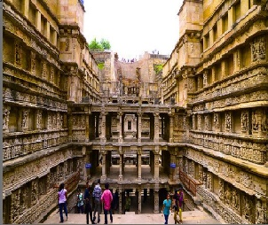

Your Tour Guide
The Historical City
 Patan, an ancient fortified town, was founded in 745 AD by Vanraj Chavda, the most prominent king of the Chavda Kingdom. He named the cityAnhilpur Patan or "Anhilwad Patan" after his close friend and Prime Minister Anhil shepherd. It is variously referre to any ocean.
These Chalukya rajputs, with Paramaras of Malwa, the Chauhans of Sakambhari and Chandellas of Kalanjar and Mahoba, were serious contestants for supremacy in northern India.
Later Mulraj, the adopted son of last Chavda king, established Solanki dynasty. He successfully expanded kingdom to west. His successor Siddhraj Jaisinh added Malwa. Kumarpal was also major ruler who patroned Jainism. Solanki rule cover Saurashtra and Kutch in the West, Lata in the South, Malwa in the East and Southern Rajasthan in the North at its greatest period. Historian Tertius Chandler estimates that Anhilwara was the tenth-largest city in the world in the year 1000, with a population of approximately 100,000.

When Muhammad Ghori had attempted to conquer Gujarat, the forces of Mularaja II, then the king of Patan, a mere boy-ruler, led by his heroic mother Naikidevi, inflicted such a crushing and conclusive defeat on him that the foreigner did not dare again during his lifetime to cast his greedy eye upon Patan. He never again entered India through Gujarat. The battle was fought at Kayadra, a village near Mount Abu. Ghori’s army was completely routed in the conflict, but somehow he escaped with his defeated army from Gujarat.
Muhammed's general and later Sultan of Delhi Qutb-ud-din Aybak sacked the city between 1200 and 1210, and it was destroyed by the Alladin Khilji in 1298.
The modern town of Patan later sprung up near the ruins of Anhilwara. During 1304 to 1411, first Patan was the Suba headquarter of Delhi Sultanate and then capital city of Gujarat Sultanate after the collapse of the Delhi Sultanate at the end of the fourteenth century. A new Fort was built by these Subas, a large portion of which along with a few of the gates is still intact. The old Fort of hindu kingdom is nearly vanquished and only a wall can be seen on the way from Kalka to Rani ki vav. In 1411, Sultan Ahmed Shah moved the capital to Ahmedabad.
Patan was part of the Baroda state from the mid-eighteenth century until India's independence in 1947, when Baroda became part of Bombay state, which in 1960 was separated into Gujarat and Maharashtra.
City Attraction
- Raani Ki Vaav
- Sahastra-Ling Talaav
- Shree Mahakaali Temple
- Panch-Mukhi Hanumaan Temple (Akhada)
- Panchasara Parshva Naath Jain Temple
- Patola House
- Padma naabh Temple
| Population | 133,737 |
|---|---|
| Coordinates | 24.204542°N 84.179143°E |
| Elevation | 76 m (249 ft) |
| Time Zone | IST (UTC+5:30) |